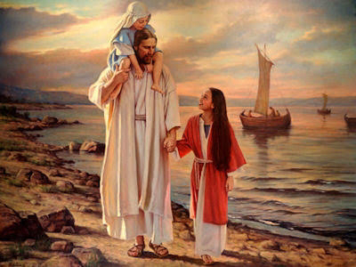
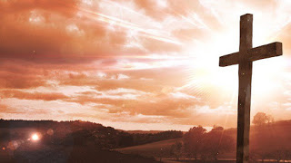

Dono da eternidade
Andar com você!

Quero andar com você, e observar cada detalhe da natureza ao teu lado, quero olhar nos seus olhos ao mesmo tempo que olho para o mar,
e perguntar como o senhor fez isso?. Quero poder dormir pertinho de ti, acordar e te pedi a benção, te admirar . Quero olhar o infinito e te enxergar nele!
Tenho vivido nos dias de hoje com um vazio enorme, nada preenche , e cada vez que a vida me tira alguém,
é como se esse vazio só aumentasse.
é como se cada pessoa que partiu dessa vida; levasse um pouco dessa sua luz pra um lugar muito distante de mim. Mas tenho a certeza que vou me encontrar com essa luz,
vou me encontrar com as pessoas que tanto amei nessa vida, tenho a sensação que não ás perdi, mas que estão em um lugar puro e que nesse lugar vou ser completo ,
completo com as pessoas e com meu Jesus, a quem amei desde o primeiro dia que ouvi seu nome,
alguém que me faz sentir a pessoa mais amada desse mundo, que me ama como sou e que nunca desistiu de mim,
até mesmo quando pensei em desistir. Enfim pai te amo e amo todos aqueles que um dia amei e até em breve!
Gratidão

Não há religião, não há teorias que definam com exatidão, oque Jesus sofreu. Deixou tudo, para que um dia nós tenhamos tudo.
Cada passo seu na terra representava a salvação, e a salvação não está apenas no ato do calvário, mas em todo o trajeto que ele caminhou.
Só vamos entender por completo sobre o sacrifício que ele fez, quando tivermos a oportunidade de perguntar face a face,
mas enquanto esse momento nao chega,
que sejamos gratos por tudo,
e que todos os dias possamos pedir perdão por tudo de errado que fazemos. Sejamos Gratos, é o mínimo que podemos fazer...